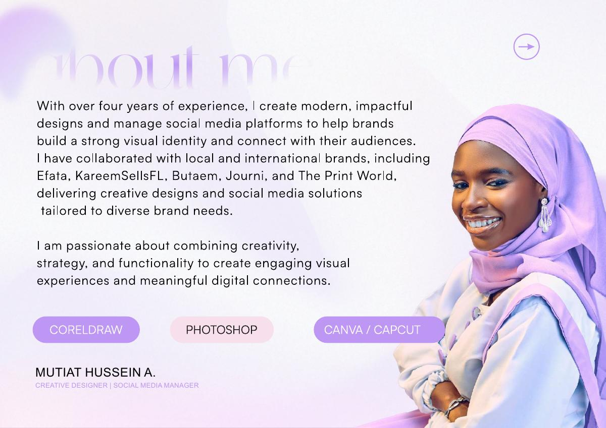

Good design makes
people feel something.
I’m Mutty — a creative designer and social media manager helping brands show up with clarity, character and confidence.
↓01 / SELECTED PROJECTS
A few things
I’ve made.
A selection of visual identities, campaigns and content created to make brands more memorable.
A selection from my portfolio. More work and case studies are available on request.

A LITTLE ABOUT ME ↗02 / THE PERSON BEHIND THE PIXELS
Hey, I’m
Mutty.
I’m a creative designer and social media manager with a love for thoughtful visuals and clear communication. I enjoy turning ideas into visual experiences that feel considered, useful and full of personality.
From building brand identities to creating content that connects with an audience, I bring curiosity, intention and a detail-loving eye to every project.
MORE ABOUT ME ON LINKEDIN ↗03 / WHAT I CAN HELP WITH
Thoughtful work.
Useful outcomes.
Whether you’re building something new or giving an existing brand a clearer voice, let’s make it count.
Brand identity & design
Visual direction, logo systems and brand assets.
↗Social media management
Content planning, creative direction and consistency.
↗Social media design
Campaign graphics and scroll-stopping content.
↗Short-form video editing
Clear, engaging edits for digital platforms.
↗Print & packaging
Bringing brand ideas to life beyond the screen.
↗04 / HAVE SOMETHING IN MIND?